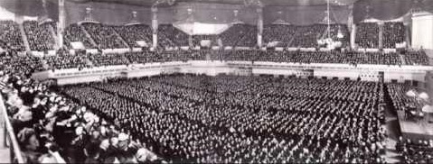
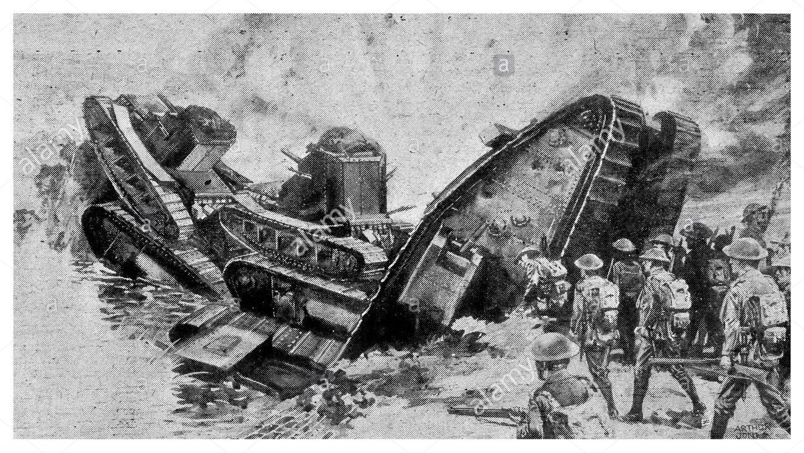
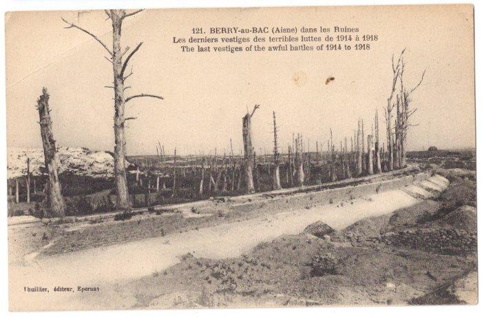
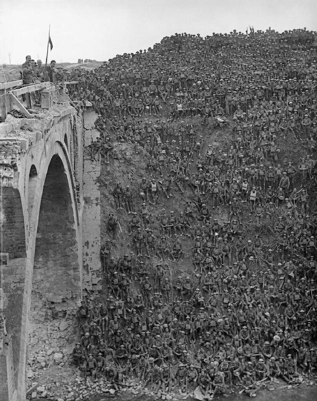
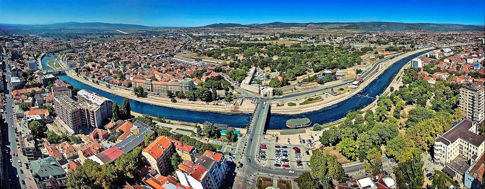
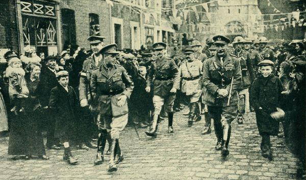
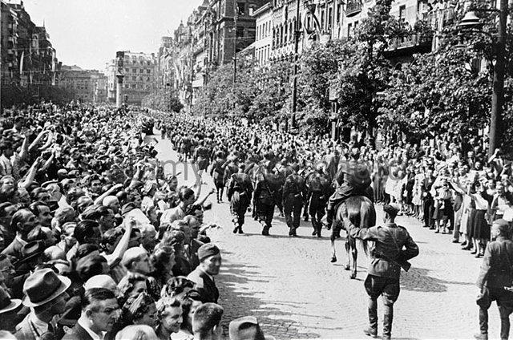
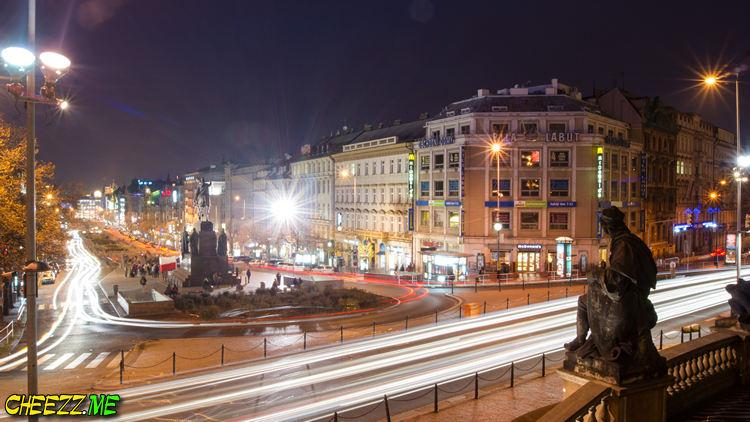
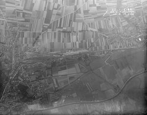

|
One simple message delivered in three ways.
Popular slogans became even more popular songs.
The message becomes news, propaganda and a patriotic paean.
Posters were a big deal during WWI. Every belligerent produced them in massive quantities and varying qualities. The cheapest broad sheets were mostly text on cheap paper, unsigned, and used as throw-away promotional and recruiting posters to hang anywhere and everywhere a space could be found. The most expensive posters were produced on good quality paper, signed by the often well-known artist, and frequently used in promoting special events and given out as rewards to big donors in war bond drives, Red Cross charity drives, and other patriotic occasions. Surprisingly, the most valuable posters were signed by the artist and a famous celebrity. Even more surprising, the highest prices paid for such posters were not for those of sports stars, movie stars, but opera singers! The three highest known prices ever paid (in the form of a donation --- remember there was no income tax or tax deductions at that time) for posters were all in excess of $100,000 for posters signed by Enrico Caruso, John MacCormack and Madam Ernestine Schumann-Heink (who raised another $50,000 for singing “Stille Nacht” in German at a Navy Hospital concert in San Diego --- I only know that because my grandmother was there that night). They could all afford it. Caruso’s tax-free income in those days was the equivalent to $30 million a year today. During her long career (she died in 1936) she raised millions of dollars for her beloved adopted homeland (she was born and raised in Austria). America.
Listen to Madam Schumann-Heink in a radio interview sing “Stille Nacht, heilige Nacht”, 21 December, 1935.
And an encore! Here’s Enrico Caruso and Ernestine Schumann-Heink singing a duet from Verdis Il Trovatore.

Photo of an undated Christmas concert featuring Caruso and Schumann-Heink.
The War to Make the World Safe for Democracy: This name is based on a speech given by US President Woodrow Wilson to Congress on April 2, 1917 in which he asked them to declare war on Germany. This was his statement
“The world must be made safe for democracy. Its peace must be planted upon the tested foundations of political liberty. We have no selfish ends to serve. We desire no conquest, no dominion. We seek no indemnities for ourselves, no material compensation for the sacrifices we shall freely make. We are but one of the champions of the rights of mankind. We shall be satisfied when those rights have been made as secure as the faith and the freedom of nations can make them.”
October definitely brings cooler temperatures to Paris with October’s average daily temperature falling to 12C and 54F; average daily highs and lows are: 16C high and 10C low; and 61F high and 50F low; rainfall is up considerably to 25mm average for the month over 13 days. One quirk of Paris’s seasons is that October has more days of rain than November but gets less rain. Hours of sunshine is down to four hours a day.
1
41 DAYS TO GO TUESDAY 1 OCTOBER 1918 9C/47F 0MM
Horse-drawn artillery on the Canal du Nord
Options on the Canal du Nord

For those who can’t swim.
The French Mandate in Syria 1918
October 1, 1918 - In the Middle East, Damascus is captured by Australian troops and Arab fighters.
Western Front
British progress and take ground south of Le Catelet; stiff fighting near Bony and south of Cambrai.
French take part of St. Quentin.
Germans fall back from Reims-Aisne plateaux; steady French advance in Champagne; Flanders ridge occupied and Ledeghem seized by British.
Battle of the Canal du Nord ends.
Southern Front
Austrians take defensive measures on their southern frontier in consequence of Bulgarian Armistice.
Italians occupy Berat and push rapidly forward in Albania.
Allies establish net and mine barrage across Straits of Otranto.
Asiatic and Egyptian Theatres
Damascus occupied by British and Arab forces; 7,000 prisoners taken.
Naval and Overseas Operations
British flag hoisted at Ebeltoft Harbour, Spitsbergen.
Political, etc.
Wages (men and women) Committee begins.
German majority programme issued.
Baron Husarek (Austrian Prime Minister) on situation: open to Peace offers; great row in Reichsrath.
2
40 DAYS TO GO WEDNESDAY 2 OCTOBER 1918 9C/47F 0MM
From Dulce et Decorum Est by Wilfred Owen (1918)
My friend you would not tell with such high zest
To children ardent for some desperate glory
The old Lie: Dulce et Decorum est
Pro Patria mori
Armentieres
Third Battle of Flanders
Armentieres: War and Reconstruction
October 2, 1918 - A military representative sent by Ludendorff to Berlin informs the legislature the war is lost and that armistice discussions should begin immediately. The German politicians are shocked by the news, having largely been kept in the dark by the General Staff and the Kaiser till now.
Western Front
Germans withdraw on wide front north and south of La Bassee Canal; British recapture Armentieres.
French eject enemy from St. Quentin.
Advance north of the Vesle to near Cormicy.
Lille being evacuated.
French capture Challerange (Argonne).
Naval and Overseas Operations
British and Italian warships bombard Durazzo, destroy Austrian base and ships and two submarines.
German submarine shells and sinks Spanish S.S. "Francoli" off Cartagena.
Political, etc.
Allies recognise belligerent status of Arab allies in Palestine and Syria.
Grand conference in Berlin under Kaiser's presidency.
3
39 DAYS TO GO THURSDAY 3 OCTOBER 1918 12C/53F 0MM
French Poilu defends his home turf and Champagne to boot!
Western Front
Germans withdraw from Lens-Armentieres line and past La Bassee.
British successfully attack on eight-mile front and take Le Catelet, etc.
Stiff fighting by French north of St. Quentin, north-west of Reims and in Champagne.
British capture Gheluwe; French and Belgians reach Hooglede.
Successful Allied air fighting, 55 German planes down.
Eastern Front
Fighting in the Urals.
Japanese reported to have joined Semenov at Ruchlevo (Siberia); 1,500 Magyar prisoners.
Southern Front
Allied forces in touch with Austro-Germans in southern Serbia; Serbs capture 7,000 Bulgars.
Big British raid on Asiago front.
Political, etc.
Germans witholding ratification of Prisoners of War Agreement because of Germans interned in China.
The Ufa (southern Urals) loyal Government declare all Soviet treaties void and propose All-Russian Constituent Assembly.
4
38 DAYS TO GO FRIDAY 4 OCTOBER 1918 11C/51F 0MM
Wine carriage in World War I
In the canteen
Sketch of soldier with pipe and bucket
No subject was taboo for the eight WWI official artists who sent back over 700 sketches and drawings they made while serving with the A.E.F. “Potty humor” and “washing up” were two popular subjects, although they remain largely unseen, even in WWI Centennial art exhibits.
October 4, 1918 - President Woodrow Wilson receives a request from the German government, sent via the Swiss, asking for armistice discussions on the basis of his Fourteen Points. The Germans have bypassed the French and British in the hope of negotiating with Wilson who they perceive as more lenient. They are disappointed, however, when Wilson responds with a list of demands as a prelude to discussions including German withdrawal from all occupied territories and a total halt of U-Boat attacks.
Western Front
British and French heavy fighting St. Quentin to Cambrai.
French and Americans increase gains in Champagne as far as the River Arnes.
American attack west of the Meuse gains ground north-east of Argonne Forest.
German guns being removed from Flanders coast.
Southern Front
Greek troops occupy Seres and Demir Hissar.
French and Serbs drive back Austrians in Vranya region, and French and Italians drive back Austrians in Albania.
Sharp fighting in Monte Grappa (Upper Brenta) region.
Naval and Overseas Operations
Japanese steamer "Hirano Maru" torpedoed off Ireland, 292 lost.
Political, etc.
Prince Maximilian of Baden appointed German Chancellor.
Germany and Austria address pleas for Armistice to President Wilson.
Ferdinand of Bulgaria abdicates; succeeded by his son Boris, who signs decree for demobilisation of Bulgar Army.
5
37 DAYS TO GO SATURDAY 5 OCTOBER 1918 10C/50F 0MM
The burning Reims Cathedral by Gustave Fraipont
Artist Gustave Fraipont painted the burning Reims Cathedral (Sept. 1914), an event which led to fear that the Germans were not only out to capture French land, but to destroy French culture.
Cathedral in Reims after the fire
October 5, 1918 - The Allies break through the last remnants of the Hindenburg Line.
Western Front
Enemy falls back between La Catelet and Crevecoeur and burns Douai.
British carry Beaurevoir, etc. (east of Le Catelet)
End of Second Battle of Cambrai, and of Battle of St. Quentin.
Germans fall back towards the Suippe river; fighting on the Arnes (Champagne).
French occupy Moronvilliers Massif (east of Reims).
Stiff American fighting west of Meuse.
Southern Front
German troops reported withdrawn from Bulgar front.
Franco-Serbs take Vranya (50 miles south of Nish).
Dibra (Albania) occupied.
Italians active on their own mountain fronts.
Political, etc.
Prince Max speaks in the Reichstag. Messrs. Grober, Erzberger and Scheidemann Secretaries of State, and Dr. Solf Foreign Minister.
Formation of Yugo-Slav National Council at Laibach.
6
36 DAYS TO GO SUNDAY 6 OCTOBER 1918 12C/53F 0MM
From For a War Memorial by G. K. Chesterton (1919)
Still to the last of crumbling time
Upon this stone be read
How many men of England died
to prove they were not dead.
Statue of Doughboy and Poilu in Thiaucourt, Champagne, France.
October 6, 1918 - A provisional government proclaims the state of Yugoslavia, signaling the beginning of the breakup of the old Habsburg (Austro-Hungarian) Empire in central Europe which had existed for six centuries.
Western Front
British take Fresnoy (north of Arras).
Second Battle of Le Cateau begins.
French press enemy back along Suippe front.
Italian advance north of Ostel (nine miles south of Laon); Laon on fire.
Stiff American fighting on Meuse-Argonne front continues.
Eastern Front
British officials from Petrograd reach Swedish frontier.
Bolsheviks repulsed by Allied troops at Seletskaya (170 miles south of Archangel).
Southern Front
65,000 Bulgars have surrendered altogether.
Prince Regent of Serbia accepts promotion to General.
Italians pushing on in Albania, north of Berat, towards Elbasan.
Asiatic and Egyptian Theatres
Reported 79,000 prisoners taken since 18 September 1918.
Zahleh and Rayak (north-west of Damascus) occupied by British cavalry.
French and British warships find Beirut evacuated.
Naval and Overseas Operations
The armed merchant cruiser HMS Otranto sunk following a collision with HMS Kashmir off the Isle of Islay, Scotland with the lost of 470 lives, including 359 American soldiers.
Political, etc.
Peaceful manifesto by King Boris.
Prince Max's letter of 12 January 1918 revealed.
France warns Germany re: crimes on French territory.
Canton Government declares war on Xu Shichang, President of the Republic of China.
7
35 DAYS TO GO MONDAY 7 OCTOBER 1918 13C/55F 1MM
Germans crossing the Scarpe river
More Germans crossing the Scarpe river

Berry-au-Bac, fought over from 1914 - 1918
October 7, 1918 - Poland, formerly part of the Russian Empire, proclaims itself as an independent state.
Western Front
British advance north of Scarpe river.
Heavy French fighting all along their line; they take Berry-au-Bac (Aisne river).
Americans drive enemy back south-east of Grand Pre.
Eastern Front
M. Guchkov (late Minister of War) executed by Bolsheviks.
Southern Front
Italians occupy Elbasan (Albania).
Asiatic and Egyptian Theatres
British occupy Sidon (Saida).
Beirut (Syria) occupied by French forces.
8
34 DAYS TO GO TUESDAY 8 OCTOBER 1918 10C/49F 0MM
The General by Siegfried Sassoon (1917)
‘Good-morning; good-morning!’ the General said
When we met him last week on our way to the line.
Now the soldiers he smiled at are most of ’em dead,
And we’re cursing his staff for incompetent swine.
‘He’s a cheery old card,’ grunted Harry to Jack
As they slogged up to Arras with rifle and pack.
But he did for them both by his plan of attack.

Brigadier General J V Campbell addressing troops of the 137th Brigade (46th Division) from the Riqueval Bridge over the St Quentin Canal
Riqueval Bridge in 2003; the canal banks are much more overgrown than when the bridge was captured during the battle
October 8, 1918 - The British 3rd and 4th Armies take 8,000 German prisoners while advancing toward Cambrai and LeCateau.
Western Front
Great Allied (3rd and 4th British Armies, 30th U.S.A. Division and French) three-mile advance on St. Quentin-Cambrai 20-mile front during the Second Battle of Cambrai; over 10,000 prisoners and 150 guns.
North of Scarpe British take Fresnes-Rouvroy line.
French drive Germans back on the Arnes, Aisne and Suippe.
Americans and French take Cornay and Consenvoye, and drive enemy back north of Verdun.
Eastern Front
M. Trepov (ex-Premier) reported shot.
Southern Front
Greeks occupy Drama.
Asiatic and Egyptian Theatres
26 Turkish Divisions reported wiped out in Syrian and Mesopotamian campaigns.
Political, etc.
President Wilson replies to Note of German Government, and demands evacuation of occupied territories as first condition of armistice.
9
33 DAYS TO GO WEDNESDAY 9 OCTOBER 1918 9C/48F 0MM
From Strange Meeting by Wilfred Owen (1917)
I am the enemy you killed my friend
I knew you in this dark; for so you frowned
Yesterday through me as you jabbed and killed.
I parried; but my hands were loath and cold.
Let us sleep now …
British troops gaze at German machine-guns after the campture of Cambrai
Memorial at the Trench of the Bayonets (Tranchée des Baïonnettes)
According to legend, a unit of French troops was buried alive here by shell bursts, leaving only their rifles protruding above the ground, with bayonets fixed.
Verdun Tableau de guerre, 1917 (Félix Vallotton, 1865–1925)
Western Front
British take Cambrai, bringing the Battle of the Hindenburg Line to a close.
Advance continued. Since 21 August entire Hindenburg system broken through, 110,000 prisoners and 1,200 guns.
British arrive within two miles of Le Cateau.
North of Verdun French and Americans push beyond 1915 line.
Hostile counter-attacks on River Arnes repulsed.
Southern Front
Serbs enter Leskovats; fighting on River Toplitsa.
Greek troops enter Kavalia.
Asiatic and Egyptian Theatres
British armoured cars enter Baalbek and take 500 prisoners.
Political, etc.
Finnish Lantdag elects Prince Friedrich Karl of Hesse King of Finland.
Proclamation of Regency Council in favour of an independent and re-united Poland.
Talaat and Enver Pashas reported resigned, and replaced by Ahmed Tewfik and Izzet Pashas.
10
32 DAYS TO GO THURSDAY 10 OCTOBER 1918 14C/58F 0MM
From Exposure by Wilfred Owen
To-night, His frost will fasten on this mud and us,
Shrivelling many hands, puckering foreheads crisp.
The burying party, picks and shovels in their shaking grasp,
Pause over half-known faces. All their eyes are ice,
But nothing happens.
‘Over The Top’: First Artists’ Rifles at Marcoing, 30 December 1917, by John N. Nash
Plateau of the Chemin des Dames
The Third Battle of the Aisne came as a complete surprise to the allies, including British troops who had been sent there to rest in a quiet sector. A German breakthrough was aided by orders of a French general to mass troops in the front line - a tactic by this date discredited. The penetration broke into open country and fighting went on from 27 May to 6 June 1918, but ran out of energy owing to lack of a strategic objective and lengthening supply lines. During the Second Battle of the Marne, the last fight on the Chemin des Dames occurred between 2 August and 10 October 1918.
Western Front
British take Le Cateau and Rouvroy (south-east of Lens) and Sallaumines. Receive King's congratulations.
Germans forced back by French beyond Oise Canal and in Champagne (losing Grand Pre) and from part of the Chemin des Dames.
Argonne forest cleared.
Battle of the Flanders Peaks ends.
Eastern Front
Death of General Alekseyev, former Chief of Staff of Tsar Nicholas II and leader of the anti-Bolshevik Volunteer Army, from a heart attack.
Southern Front
Allies approach Nish, held by Mackensen.
Pristina (Serbia) retaken by French forces.
Naval and Overseas Operations
The Irish mail-boat "Leinster" torpedoed in Irish Channel; 527 lost.
Von Lettow-Vorbeck reported moving to northern end of Lake Nyassa.
Political, etc.
General von Scheuch succeeds von Stein as German War Minister.
Cuban troops offered to U.S.A.
French Socialist Congress passes a "Bolshevist" resolution.
Severe "flu" epidemic in South Africa.
Tuann Chi Jui, Chinese Prime Minister, retired.
11
31 DAYS TO GO FRIDAY 11 OCTOBER 1918 12C/53F 1MM
Battle of the river Selles
Tommies over the top as the Hundred Days Battle continues
Allies going north and German POWs marching south
Western Front
Strong German resistance north of River Selle (Le Cateau).
Germans retreat from strong positions north of River Sensee
British close to Douai.
Enemy retreats on 38-mile front north of Rivers Arnes and Suippe.
Big French advance.
Germans strip Flanders coast of ships and aeroplanes.
Southern Front
Heavy fighting on Asiago plateau; 500 prisoners.
General Jekor, Bulgarian Commander-in-Chief, dismissed.
Allied raid north of Monte Grappa.
Political, etc.
Herr Erzberger announces German militarism is dead.
Huge military appropriations demanded in U.S.A.
Emperor Karl receives nationality deputations at Reichsrat.
Dr. Wekerle, Hungarian Prime Minister, resigns.
Martial law in parts of Poland.
Feng Kuo-Chang, President of China, retires.
12
30 DAYS TO GO SATURDAY 12 OCTOBER 1918 12C/53F 0MM
Serbian officers entering Niš

Modern day Niš on the banks of the Nišava River
Niš, bridge between Asia and Europe and considered one of Europe’s oldest cities. First rose to prominence under Roman Emperor Constantine the Great, founder of Constantinople, who was born there; it's been fought over ever since. During the First Balkan War it was the seat of the Main Headquarters of the Serbian Army, who led the military operations against the Ottoman Empire. In World War I, Niš was the wartime capital of Serbia, hosting the Government and the National Assembly, until Central Powers conquered Serbia in November 1915, when the city was ceded to Bulgaria.
Western Front
Fighting on River Selle.
End of Second Battle of Le Cateau.
French take Vouziers.
End of Champagne Battle (since 26 September); 21,500 prisoners and 600 guns taken.
French north of Craonne and within three miles of Laon.
Eastern Front
Action of Dushak (Trans-Caspian) during the Allied intervention in the Russian Civil War. 570 British and Indian troops were sent in to occupy the town. After heavy fighting the Bolsheviks retreated from Dushak.
Southern Front
Serbs capture Nish after stiff fight.
French occupy Mitrovitsa and Prisrend.
90,000 Bulgars and 2,000 guns captured in 27 days.
Italians take Kavaya (Albania).
Political, etc.
German Government reply to President Wilson’s Note and accept conditions.
Luxembourg begs President Wilson to protect her rights.
Polish National Army recognised by Allied Powers.
British Government recognize the Polish National Army as autonomous, allied and co-belligerent.
U.S. troops overseas number over 1,900,000.
13
29 DAYS TO GO SUNDAY 13 OCTOBER 1918 10C/49F 0MM
Argonne forest, France, WWI
The “No Man’s Land” of the Meuse-Argonne
314th Infantry Regiment, Meuse-Argonne Offensive
October 13, 1918 - The Germans engage in a general retreat along a 60-mile portion of the Western Front in France stretching from St. Quentin southward to the Argonne Forest, as French and American armies steadily advance.
Western Front
More fighting on River Selle line; progress north-west of Douai.
French capture La Fere and Laon and push well on.
Stiff fighting on Meuse, north of Verdun.
Eastern Front
French, British and Japanese troops enter Siberia.
Southern Front
French cavalry enter Pirot.
Serbs storm enemy positions north of Nish.
Asiatic and Egyptian Theatres
British advanced forces enter Tripoli (Lebanon).
Political, etc.
M. Venizelos arrives in London.
Izzet Pasha succeeds Taslaat Pasha as Turkish Grand Vizer.
14
28 DAYS TO GO MONDAY 14 OCTOBER 1918 9C/48F 0MM
American troops during the Meuse-Argonne Offensive
German pill box in Argonne Forest; there were hundreds of these
Both sides had thousands of machine guns and each one could shoot up to 600 bullets a minute
October 14, 1918 - Germans abandon positions along the Belgian coast and northernmost France as the British and Belgians steadily advance.
Western Front
Battle of Courtrai (14 – 19 Oct), also known as the Second Battle of Belgium: Grand Allied attack in Flanders under King of Belgians; advance of five miles.
French storm Roulers and Sissonne.
German attacks on Selle river repulsed.
French advance on River Aisne west of Rethel.
Eastern Front
British, Indian and Turkoman troops attack Bolsheviks, and after severe Indian losses drive enemy from Dushak (90 miles west of Merv).
British troops from Vladivostok reach Irkutsk.
Southern Front
Allies continue advance in Serbia and Adriatic coastal towns.
Italians take Durazzo from land side; enemy evacuate Jakova and retire on Ipek (Montenegro).
Naval and Overseas Operations
S.S. "Brussels" at Zeebrugge torpedoed by British destroyers.
Political, etc.
President Wilson replies to German Government, attaching further military conditions to the terms of armistice, and warning against further breaches of laws of war, and insists on dealing only with a democratic government.
Turkish Government Note to President Wilson proposing an armistice delivered at Washington.
Spaniards take over seven German ships as compensation.
Izzet Pasha Grand Vizier and Minister of War.
15
27 DAYS TO GO TUESDAY 15 OCTOBER 1918 9C/48F 4MM
Struggling on through the Argonne
"Every man who served in the regiment will have many pictures like this in his mind-- trucks, caissons, fourgons and 'slat wagons' struggling along through the mud and long, straggling lines of engineer and pioneer infantry lads carrying German shell baskets full of rocks and dumping them into the mud-holes." - 314th.org/montfaucon
Clifton B. Cates, at Verdun during the last days of the conflict
"I have only two men out of my company and twenty out of some other company. We need support, but it is almost suicide to try to get it here as we are swept by machine gun fire and a constant barrage is on us. I have no one on my left and only a few on my right. I will hold." - Clifton B. Cates, Battle of Belleau Wood, July 1918
Western Front
Further advance in Flanders; British take Menin and close on Courtrai; Belgians close to Thourout.
British advance north-east of Lens.
French advance along River Serre and in the Argonne.
Asiatic and Egyptian Theatres
Homs (Syria) occupied by British cavalry.
Political, etc.
Yugoslav demand for peace based on popular rights issued.
SPECIAL REPORT: MAPPING THE MEUSE-ARGONNE OFFENSIVE
Position of the Allied forces during the Hundred Days Offensive with the Americans on the far left, closest to the German border
Plan of flank attack of First Army against Argonne Forest
Map of "Our Greatest Battle" at the Meuse-Argonne
Different map angle of Meuse-Argonne
Flanking the Argonne Forest
The Heights of Cunel and Romagne
American Expeditionary Forces deployed at Meuse-Argonne
Teaching and Mapping the Geography of the Meuse Argonne Offensive | American Battle Monuments Commission
The Alsace-Lorraine region where the offensive played out, was important as it contained many railroads and communication lines between the German heimat and the frontline. Breaking through would effectively cut the German Army in two. But the terrain was difficult and the enemy well-entrenched. What was Pershing's plan and what were the difficulties encountered? Learn it through the story of the Lost Batallion.
16
26 DAYS TO GO WEDNESDAY 16 OCTOBER 1918 10C/49F 1MM
Austrian Emperor issues manifesto proclaiming a Federal State on the principle of Nationality (excluding Hungary)
Western Front
Enemy retreats from Douai-Lille front, pursued by British.
Flanders army advances, taking part of Courtrai.
Americans enter Grand Pre after hard fight.
Strong German counter-attack on River Selle.
Dunkirk finally shelled by long-range gun.
Eastern Front
M. Lenin again wounded.
Bolsheviks try to stop Middlesex battalion at Zema (Siberia).
Southern Front
Greece cleared of Bulgarians. Proclamation issued.
Asiatic and Egyptian Theatres
Armenian General Andranik harassing Turkish communications about Erivan (Russian Armenia).
Political, etc.
Peace demonstrations in Berlin; public opinion much disturbed.
Manifesto by Emperor Karl granting autonomy to Yugo-Slavs.
Row in Hungarian Parliament.
17
25 DAYS TO GO THURSDAY 17 OCTOBER 1918 10C/49F 0MM

King Albert I pressing the flesh.
Death of the Soldier King | The Royal Forums
In an era when there were many more crowned heads of state than there are now, the King of Belgium stood out as the only one on the frontline in command of his troops. It's said that the German troops refused to shoot at him for fear of retribution for killing a person related in blood with their own Kaiser. But bombs and mines have no conscience, and when your country is reduced to nothing more than a big beach and some farmland, there's not much space to hide either. Still he stayed with his men for the whole duration of the war, a soldier, a king and a diplomat respected both by his countrymen and abroad. His son would fare much worse, forced to abdicate after spending the next World War as a hostage (some say a traitor) of the same German invaders. But that's another story.
October 17, 1918 - King Albert of Belgium enters the city of Ostend on the Belgian coast.
Western Front
Battle of the Selle (17 – 26 October) begins.
British-American attack on nine-mile front carries line of Selle south of Le Cateau.
British enter Douai and capture Lille (stripped).
Belgians enter Ostend by land, their King and Queen and Sir R. Keyes by sea; cavalry at gates of Bruges.
British reach outskirts of Tourcoing.
Americans fight west of Grand Pre.
Eastern Front
British troops in Transcaspia capture Dushak, driving back Bolsheviks.
Southern Front
Franco-Serbs occupy Knyazhevats and Krushevats.
Montenegrins rise against Austrians.
French capture Ipek.
Over half of Serbia cleared of enemy.
Asiatic and Egyptian Theatres
Tigris railway extended by British beyond Tekrit.
Political, etc.
British Government recognises Polish Army as autonomous.
Proclamation in Prague of Czech Republic, and at Agram (Zagreb) of Yugo-Slav independence.
Bolshevik-German correspondence published in Washington.
18
24 DAYS TO GO FRIDAY 18 OCTOBER 1918 9C/48F 0MM
Kaiser Wilhelm II in Bruges in 1915.
British POWs and German guards march through Bruges, Belgium market square, 1917
More POWs in Belgium
Western Front
British advance six miles east of Douai-Lille, and three miles east of Le Cateau.
Belgians approach Bruges after strong resistance.
Stiff fighting on Grand Pre-Vouziers line. Germans pushed back.
Eastern Front
British troops repel far superior number of Bolsheviks at Seletsko (160 miles up Dvina river from Archangel).
Allies push on to Soroka (south-west White Sea) from Murmansk.
Czecho-Slovaks pressed back by Bolsheviks in East Russia.
Southern Front
Bulgaria cleared of Germans who pillaged to the last.
Italians active on their mountain fronts.
Asiatic and Egyptian Theatres
British hold Turks at Fatha (30 miles north of Tekrit, Tigris).
Naval and Overseas Operations
Spanish zone in Morocco in complete anarchy: Raisuli and Abdul Malek and German influence supreme.
Political, etc.
President Wilson declines suggestions in Austro-Hungarian Note of 4 October.
Higher allowances to dependents of fighters granted.
Count Tisza admits defeat.
Count Burian resigns.
Czecho-Slovak Council in Paris declares independence.
Prince of Wales gives �3,000 to Red Cross.
British troops from Vladivostok reach Omsk.
President Wilson replies to Austrian Hungarian Note. Of October 4th.
19
23 DAYS TO GO SATURDAY 19 OCTOBER 1918 7C/45F 11MM
King and Queen of Belgium land in Ostend, pause in Bruges, and return to Bruxelles.

Battle of Courtnai or Second Battle of Belgium ends.
Western Front
British-American advance continued between the Oise and Le Cateau.
British advance east of Douai and Lille and take Marchienne.
Belgians occupy Zeebrugge and storm Bruges, their left on Dutch frontier; whole coast and west Flanders liberated.
French break Hunding Line between Sissonne and River Serre.
Eastern Front
Allied troops from Murmansk have cleared Karelia of enemy, and from Archangel have occupied Kadish (100 miles south of Archangel) (accounced).
Southern Front
Serbs occupy Zayechar (Austrian-Bulgarian-Serb frontier).
French reach Danube at Vidin (Bulgaria).
Naval and Overseas Operations
German submarines ordered to return to their bases (announced from Madrid).
20
22 DAYS TO GO SUNDAY 20 OCTOBER 1918 10C/50F 6MM
“Destroyer in Dry Dock”, by John Northcote Nash, Cartwright Hall Art Gallery
German Navy high command and ship commanders had to decide to surrender or scuttle their ships. For the sailors it was simpler --- the question was whether to mutiny or not.
Western Front
British cross the Selle river in face of heavy resistance.
British two miles from Tournai.
Flanders armies continue advance; British across whole of Lys river on their front.
Entire Belgian coast in hands of Allies.
Naval and Overseas Operations
S.S. "Dundalk" torpedoed in Irish Channel.
Political, etc.
Denmark proposes to Germany a plebiscite (as to nationality) for Schleswig Holstein.
Fourth Liberty Loan in U.S.A. exceeds 1,200 million pounds.
Germany suspends submarine warfare.
Belgian coast completely reoccupied by Allied forces.
Battle of Lys and Escaut (Which included the Second Battle of Lys and the Battle of the Escaut.) a phase of the Hundred Days Offensive.
Battle of Serre, a phase of the Hundred Days Offensive.
German Government replyto President Wilson’s Note accepting proposals contained therein.
21
21 DAYS TO GO MONDAY 21 OCTOBER 1918 8C/46F 0MM
SPECIAL REPORT: HUNDRED YEARS OF TURMOIL
Czecho-Slovak Republic proclaimed, 28 October 1918
Liberation of Prague 1945

Liberation of Prague, May 1945, by Russian forces.
“Halt! We want to surrender.” (original Czech caption). US GIs arrive in Pilsen, May 1945
Gen. Patton’s Army liberates Pilsen, 6 May 1945
Czecho-Slovaks declare de facto independence in Prague, 22 August 1968
Czecho-Slovaks declare independence.

Prague lives the good life, Summer 2017.
Western Front
British cross the Selle river in face of heavy resistance.
British two miles from Tournai.
Flanders armies continue advance; British across whole of Lys river on their front.
Entire Belgian coast in hands of Allies.
Naval and Overseas Operations
S.S. "Dundalk" torpedoed in Irish Channel.
Political, etc.
Denmark proposes to Germany a plebiscite (as to nationality) for Schleswig Holstein.
Fourth Liberty Loan in U.S.A. exceeds 1,200 million pounds.
22
20 DAYS TO GO TUESDAY 22 OCTOBER 1918 9C/47F 0MM
The 60-mile-long Serre river, a branch of the Oisne, in the Somme Valley today.
The older locals tell the story that on 1 July 1916 when the Germans attacked the river was the color of a good Burgundy wine, but in October 1918 when the Allies retook the river and commune the river was the color of a Beaujolais rose. Today the small village has seven WWI memorials and cemeteries, one French and six British.
Western Front
British enter Valenciennes.
French and Czech-Slovaks push enemy back on the Serre river.
Fierce fighting by the Americans on both banks of Meuse, north of Verdun and in the Woevre.
Eastern Front
New Polish Cabinet formed under M. Swiezynski.
Southern Front
Lord Cavan's despatch, dated 14 September (10 March to 13 September), issued.
Naval and Overseas Operations
Italian ships shell S. Giovanni di Medua (Albania).
Political, etc.
Hindenburg's order "approving peace-steps" captured.
Prince Max announced programme of some reforms.
Karl Liebknecht released.
Affair of Imad (Aden).
23
19 DAYS TO GO WEDNESDAY 23 OCTOBER 1918 12C/53F 0MM
Ludendorff resigns.
A cartoon of the day.
Western Front
Big British attack between Le Cateau and Valenciennes carries line forward one to three miles after stiff resistance; Bruay taken and Scheldt reached.
Heavy fighting by French on Serre and Vouziers fronts.
King and Queen of Belgians fly to Bruges.
Eastern Front
Bolsheviks attack Allied position of River Dvina (south of Archangel) and are repulsed.
Southern Front
Croat troops seize Fiume, but are suppressed.
Asiatic and Egyptian Theatres
Turks retire, pursued, 20 miles from Fatha (Tigris).
Naval and Overseas Operations
239,000 tons Allied shipping (including 151,000 British) lost in September (announced).
Political, etc.
Mr. Balfour on the Empire.
U.S.A. Note in reply to German one of 20 October.
Impudent German reply re: prisoners.
House of Commons approves of female M.P.s.
Karl Liebknecht amnestied.
Dr. Solf and German War Minister on the situation.
Baron Hussarek still Austrian Premier.
Battle of Sharqat (23 – 30 Oct).
British advance on Mosul (Mesopotamia) begins.
President Wilson replies to German Note of the 20th, and agrees, to submit the matter to the Allied and Associated Governments.
October 23, 1918 - Under pressure from the French and British, President Wilson informs the German government that armistice negotiations can not ensue with the current military or Imperial war leaders still in place. An outraged General Ludendorff then disavows the negotiations as 'unconditional surrender' and is forced to resign by the Kaiser. In the face of such turmoil, the armistice negotiations are conducted principally by civilian members of Germany's government. This will become the basis of a postwar "stab in the back" claim by German militarists asserting their troops at the Front were sold out by the politicians back home.
Under pressure from the government of Chancellor Max von Baden, Erich Ludendorff, the quartermaster general of the German army, resigns on October 27, 1918, just days before Germany calls for an armistice, bringing World War I to an end after four long years.
Second in command to Chief of Staff Paul von Hindenburg for most of the war effort, Ludendorff had masterminded the final, massive German offensive during the spring of 1918. Beginning that summer, however, the Allies—spearheaded by British, French and American troops—made a great resurgence, reversing many of Germany’s gains and turning the tide decisively toward an Allied victory. By the end of September, the Germans had been forced to retreat to the so-called Hindenburg Line, the last line of their defenses in eastern France and western Belgium; on September 29, that formidable line was breached.
That same day, at a meeting of Kaiser Wilhelm’s crown council at the resort town of Spa, Ludendorff demanded that Germany seek an immediate armistice on the terms set forth by U.S. President Woodrow Wilson in his famous Fourteen Points address the previous January. A week later, the newly appointed chancellor, von Baden, contacted Washington to open peace negotiations. Fighting continued, however, as Wilson and the other Allies refused to negotiate with an undemocratic Germany governed, in effect, by the army’s Supreme Command. A defiant Ludendorff and Hindenburg resolved to fight on, issuing a letter to all army group commanders calling the Allied demands that Germany submit to its armistice terms unreasonable and “nothing for us soldiers but a challenge to continue our resistance with all our strength.”
This telegraphed “fight to the finish” order was withdrawn after an army commander protested—its message was largely impossible for the demoralized and broken German army to carry out. It was leaked to the newspapers, however, and published on October 25 to the great outrage of the German government. Von Baden went to Kaiser Wilhelm to demand Ludendorff’s resignation; for his part, Ludendorff traveled to Berlin to convince the kaiser to reject the latest note from President Wilson. He blamed defeat on the battlefield to discontent on the home front, stating that if the German people would support their troops, “the war can be maintained for some months.” Although backed by Hindenburg and the chief of the German navy, Admiral Reinhardt Scheer, Ludendorff had angered the kaiser, and was forced to tender his resignation. Hindenburg tried to resign as well, but was refused by Wilhelm, and he remained as a mere figurehead for a great German war-making machine that had lost its driving force. Less than two weeks later, the kaiser himself abdicated, and World War I was over.
24
18 DAYS TO GO THURSDAY 24 OCTOBER 1918 10C/51F 0MM

Vittorio Veneto Offensive. Even if they’ve inherited a new empire of rubble, the Italians are happy.
Western Front
British attack resumed; advance of three miles after heavy fighting. 9,000 prisoners and 150 guns taken in last two days. German counter-attack on Derivation Canal repulsed by Belgians.
Slight French advance on southern fronts.
Southern Front
Serbs force enemy back in disorder along Morava.
Third Battle of the Piave begins.
7th British Division seizes part of Grave di Papadopoli Island (River Piave) (night of 23-24 October).
Stiff successful fighting in Monte Grappa region; 2,800 prisoners.
Asiatic and Egyptian Theatres
British cavalry within four miles of Kirkuk (100 miles south-east of Mosul, Tigris river).
British successfully attack Turks at Fatha.
Political, etc.
Growing desire in Germany for Kaiser to adbicate.
National Council in Croatia meets.
German mark drops to 33 to the �.
Battle of Vittorio Veneto (24 Oct – 4 Nov). The Austro-Hungarian Army is routed. The Italians enter Trent and land at Triest.
Second Battle of Monte Grappo (24 – 28 Oct), beginning phase of Vittorio Veneto.
Dr. Wekerle, Hungarian Premier, resigns.
October 24, 1918 - In southern Europe, the Allies cross the Piave River to push the Austrians out of Italy as seven Italian armies, incorporating British, French and American divisions, attack the four remaining Austro-Hungarian armies from the Trentino westward to the Gulf of Venice. In its final battle of the war, the Austro-Hungarian Army sees 30,000 soldiers killed and over 400,000 taken prisoner.
25
17 DAYS TO GO FRIDAY 25 OCTOBER 1918 10C/49F 0MM
Gyula, Count Andrassy (the father)
After his retirement, Andrássy remained in public life as a member of Hungary’s upper house. His younger son and namesake also became a distinguished Austro-Hungarian political leader.
The son.
On October 27 Gyula, Gróf (Count) Andrássy (the son of the former foreign minister Andrássy), who had replaced Burián three days before as foreign minister, sent a new note to Wilson; in asking for an armistice, he declared full adherence to the statements set forth in the U.S. note of October 18, thus explicitly recognizing the existence of an independent Czechoslovak state. From this moment, it remained only to liquidate the war.
Western Front
Further British advance between Le Quesnoy and Maing.
End of the Battle of the Selle.
Successful French attacks between Rivers Serre and Oise, and between Rethel and Sissonne.
Stiff American fighting north of Verdun.
French and British advance to 10 miles east of Courtrai.
Southern Front
Serbs reach Kraguyevats and Chrupriya (60 miles south of Danube).
Asiatic and Egyptian Theatres
British columns turn Turkish position at mouth of Lower Zab river (Tigris).
Cavalry occupy Kirkuk.
Battle of the Selle ends.
Kirkuk (Mesopotamia) again taken by British forces.
Count Andrassy (the son) becomes Austro-Hungarian Foreign Minister
Battle of Aleppo.
26
16 DAYS TO GO SATURDAY 26 OCTOBER 1918 11C/51F 0MM
King Nicholas 1st of Montenegro
Western Front
British progress south of Valenciennes and repulse German attack on Maing.
Heavy French fighting on Rethel-Oise front.
Slight advance east of Courtrai.
General Ludendorff resigns.
Southern Front
Remainder of Grave di Papadopoli Island seized by British and Italians.
Asiatic and Egyptian Theatres
British advanced troops occupy Aleppo.
Turks on Tigris retreat during night 26/27 to Kalaat Shergat.
Political, etc.
Count J. Andrassy succeeds Count Burian as Foreign Minister.
King of Montenegro suggests a Confederated Yugo-Slavia with autonomous States.
King of Montenegro issues manifesto in favor of a confederated Yugo-Slavia with autonomous States.
27
15 DAYS TO GO SUNDAY 27 OCTOBER 1918 10C/50F 0MM

Western Front
British progress south of Valenciennes and repulse German attack on Maing.
Heavy French fighting on Rethel-Oise front.
Slight advance east of Courtrai.
General Ludendorff resigns.
Southern Front
Remainder of Grave di Papadopoli Island seized by British and Italians.
Asiatic and Egyptian Theatres
British advanced troops occupy Aleppo.
Turks on Tigris retreat during night 26/27 to Kalaat Shergat.
Political, etc.
Count J. Andrassy succeeds Count Burian as Foreign Minister.
King of Montenegro suggests a Confederated Yugo-Slavia with autonomous States.
Austrian Government asks Italy for an armistice.
German Government acknowledges President Wilson’s Note of October 23rd.
Austro-Hungarian Government submits further Note to President Wilson asking for immediate armistice “without awaiting the result of other negotiations.”
General Von Ludendorff resigns.
28
14 DAYS TO GO MONDAY 28 OCTOBER 1918 11C/51F 0MM
At Museo Delle Forze Armate 1914-1945.
Western Front
Slight British advance south of Valenciennes.
Heavy French fighting at Verly (Oise) and (American) about Grand Pre.
Great French bombing raid on Seraincourt (north-west of Rethel).
Eastern Front
Siberian Coalition Ministry formed under Admiral Kolchak (War and Marine); MM. Shekin (Foreign Affairs), Orlov (Commerce) and Ostrugov (Communications).
Southern Front
General advance by 10th and 12th Italian Armies. Stiff fighting, Austrians driven back.
Severe fighting in Grappa region.
Italians enter Allessio (Albania).
Asiatic and Egyptian Theatres
Turks attack British on east bank of Tigris, but are heavily beaten on west bank, and retreat.
British beat Turks at Shergat.
Political, etc.
Allied Conference in Paris.
Professor Lammasch succeeds Baron Hussarek as Austrian Prime Minister.
Fresh Austrian Note to President Wilson urging immediate Armistice.
Czech National Council takes over administration in Prague.
Admiral Prince Yorihito arrives in London.
Kaiser's decree to Chancellor states "Kaiser's office is one of service to German people".
Fighting in Syria and Mesopotamia continues between Turks and British “The smell of oil is in the air,” as Churchill infamously said. (or should have)
29
13 DAYS TO GO TUESDAY 29 OCTOBER 1918 9C/48F 0MM
Beginning of the German High Seas Fleet mutiny.
What terrified commanders was the first-ever presence of a German version of the red flag that Russian sailors had flown during the 1905 Kronstadt mutinies.
Sailors of the German High Seas Fleet refused to sail on a “suicide” mission to attack the British Fleet. Over a thousand were arrested. As a consequence the Fleet was immobilized.
Western Front
Successful French attack on 7.5-mile front north-west of Chateau Porcien (west of Rethel).
Southern Front
Main Italian (and British) forces advance five miles on 30-mile front. Enemy are weakening.
Asiatic and Egyptian Theatres
Pursuit of Turks continues: position cut-off and captured.
Political, etc.
Archduke Joseph charged by Emperor Karl with scheme for independence of Hungary.
Indictment of Caillaux in French Senate.
Independence of Croatia and Yugo-Slav lands agreed to by Croat Congress at Agram.
Wilhelm Groener replaces Erich Ludendorff as Hindenburg’s deputy.
Germany’s Hochseeflotte mutinies.
State of Slovenes, Croats and Serbs proclaimed.
On 29th October, Germany’s navy mutinied.
October 29, 1918 - The Czechs declare their independence from Austria. Two days later, Slovakia declares independence from Hungary. Czechoslovakia is subsequently formed.
30
12 DAYS TO GO WEDNESDAY 30 OCTOBER 1918 8C/46F 0MM
View of modern Smederevo, Serbia, on the Danube about 45 miles downriver from Belgrade.
Western Front
Over 30,000 prisoners taken in Flanders during past month.
Region above Valenciennes flooded by Germans.
Mannheim bombed by British.
Southern Front
Serbs reach Danube east of Semendria and occupy and Pozharevats.
Italian advance continues between Upper Brenta and sea; 33,000 prisoners.
Severe fighting at Grappa.
Fiume surrendered to the Croats by the Hungarians.
Asiatic and Egyptian Theatres
Turkish Army on Tigris surrenders to British.
Political, etc.
Serious influenza epidemic in London; 2,200 deaths last week.
Hungarian Republic proclaimed: Count Hadik Prime Minister.
German Note to U.S.A. received sating Armistice terms are being awaited.
National Council of Fiume proclaims independence of city and desires union with Italy.
Armistice between Turkey and Entente Powers signed at Mudros.
Sponsored Links
The Ottoman Empire signs the Armistice of Mudros.
On 30th October, Turkey made peace.
Fiume surrendered to the Croats by the Hungarian authorities.
October 30, 1918 - Turkey signs an armistice with the Allies, becoming the second of the Central Powers to quit the war.
31
11 DAYS TO GO THURSDAY 31 OCTOBER 1918 8C/46F 6MM
Town hall of Audenarde, a town known for its tapestries, in Flanders, Belgium.

Cyrus Leroy Baldridge “I was there.”

Example of aerial photography over Belgium in 1918.
Western Front
British captures in last three months: 172,659 prisoners, 2,378 guns, 17,000 machine guns, 2,750 trench mortars, etc.
British successful attack south-west of Audenarde (Courtrai), carrying all objectives; 1,000 prisoners.
Southern Front
Scutari (Albania) captured by Italians.
Austrians in Trentino and Venetian Alps separated and chased back, losing all positions between the Brenta and Piave.
Austrian Commander-in-Chief applies to General Diaz for an Armistice.
Naval and Overseas Operations
Austrian Fleet handed to Yugo-Slav Council and Danube flotilla to Hungarians.
Political, etc.
Revolution in Vienna.
Count Tisza assassinated in Vienna.
Hostilities between Turkey and Entente cease at noon.
End of the Dual Monarchy.
Italians and Slovenes take over Trieste.
Hostilities between Entente and Turkey cease.
Scutari (Albania) retaken by Italian forces.
Revolutions in Vienna and Budapest.
Count Tisza assassinated in Vienna.
Austrian Emperor makes over the Austro-Hungarian Fleet to the Yugo-Slav National Council.
|